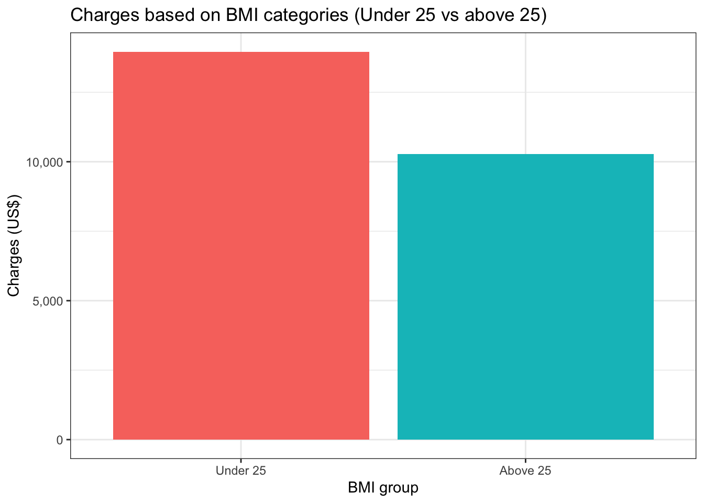
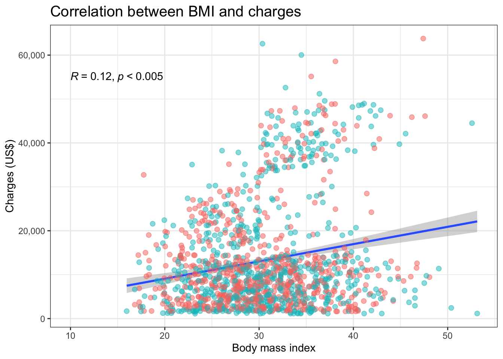
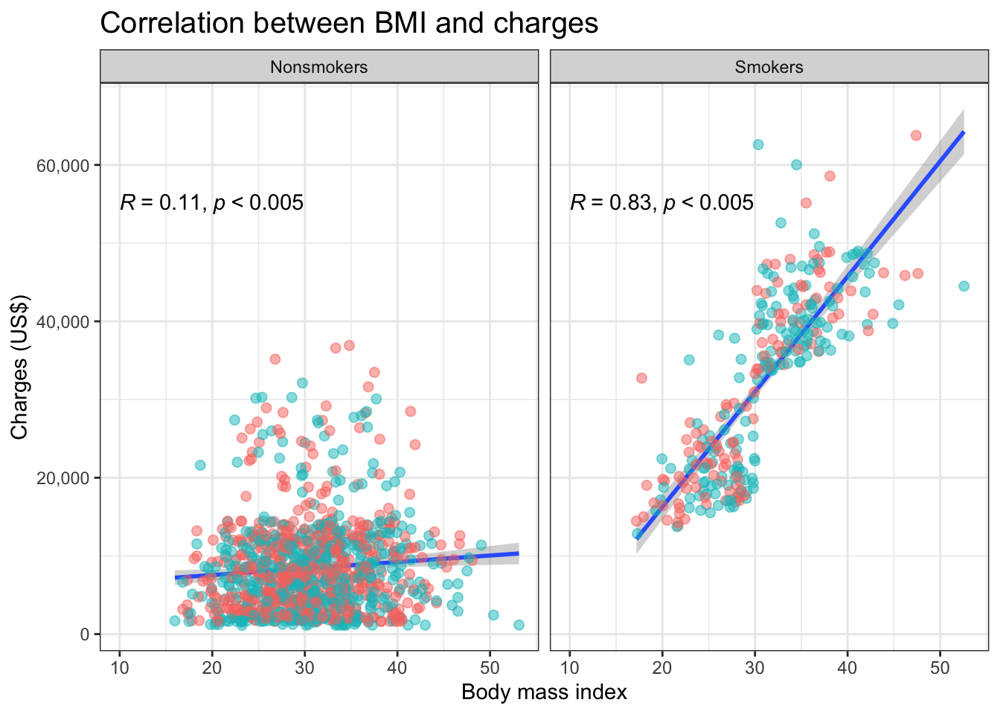
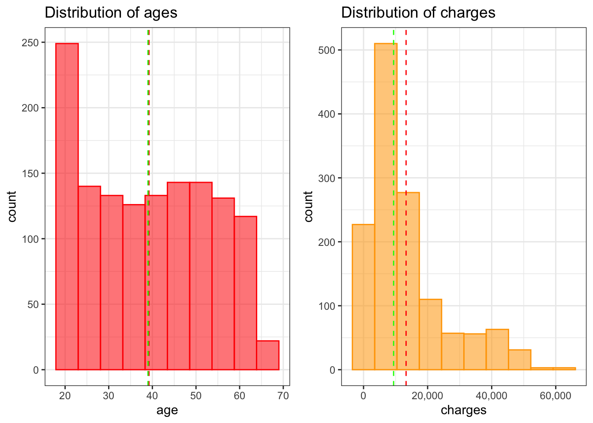
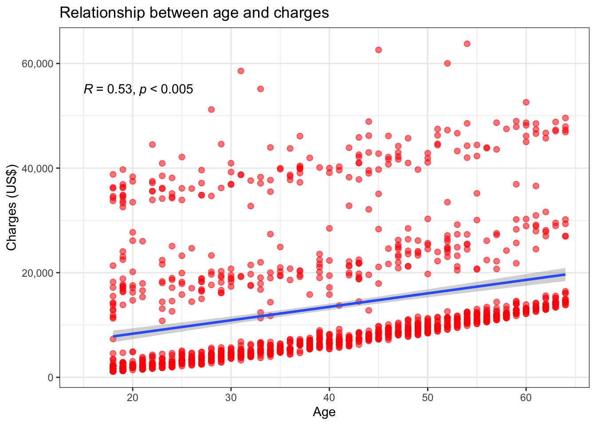
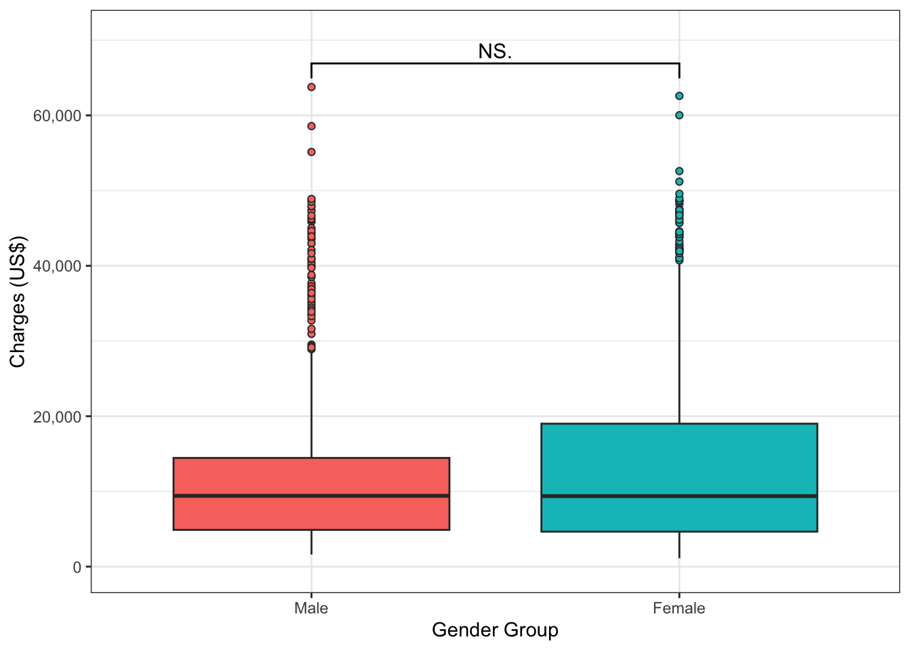

# A tibble: 4 × 6
# Groups: smoker [2]
smoker sex mean.age mean.bmi mean.children mean.charges
<chr> <chr> <dbl> <dbl> <dbl> <dbl>
1 no female 39.7 30.5 1.09 8762.
2 no male 39.1 30.8 1.09 8100.
3 yes female 38.6 29.6 1.01 30679
4 yes male 38.4 31.5 1.19 33042.
1.2 Mean of Smokers’ BMI
# What is the mean of smokers' BMI?insurance %>%filter(smoker %in%'yes') %>%summarize(mean =mean(bmi)) %>%round(digits =3)
# A tibble: 1 × 1
mean
<dbl>
1 30.7
1.3 Variances of Charges for Smokers and Non-smokers
var(insurance$charges)
[1] 146660811
sd(insurance$charges)
[1] 12110.36
1.4 Means of Ages across M and F Smokers
# Do male and female smokers have different ages?age_means <- insurance %>%filter(smoker %in%'yes') %>%group_by(sex) %>%summarize(age_mean =mean(age))age_means
# A tibble: 2 × 2
sex age_mean
<chr> <dbl>
1 female 38.6
2 male 38.4
1.5 Means of Charges between Smokers and Nonsmokers
# Do smokers and nonsmokers have different insurance charges?insurance %>%group_by(smoker) %>%summarize(charges_mean =mean(charges))
# A tibble: 2 × 2
smoker charges_mean
<chr> <dbl>
1 no 8441.
2 yes 32050.
1.6 Mean of Charges for BMI > 25 and BMI < 25
# Do policyholders with different BMI groups have different charges?bmi.above25 <- insurance %>%filter(bmi >25) %>%summarize(mean.charges.above =mean(charges))bmi.under25 <- insurance %>%filter(bmi <25) %>%summarize(mean.charges.below =mean(charges))bind_cols(bmi.under25, bmi.above25) %>%pivot_longer(mean.charges.below:mean.charges.above,names_to ="Category",values_to ="Value")
# A tibble: 2 × 2
Category Value
<chr> <dbl>
1 mean.charges.below 10282.
2 mean.charges.above 13958.
bind_cols(bmi.under25, bmi.above25) %>%pivot_longer(mean.charges.below:mean.charges.above,names_to ="Category",values_to ="Value") %>%ggplot(aes(x = Category, y = Value)) +geom_col(aes(fill = Category), show.legend = F) +scale_x_discrete(labels =c("Under 25", "Above 25")) +scale_y_continuous(labels = comma) +labs(title ="Charges based on BMI categories (Under 25 vs above 25)",x ="BMI group", y ="Charges (US$)") +theme_bw()

1.7 Mean of BMI across Genders
# Do M and F policy holders have different BMI?insurance %>%group_by(sex) %>%summarize(bmi_mean =mean(bmi))
# A tibble: 2 × 2
sex bmi_mean
<chr> <dbl>
1 female 30.4
2 male 30.9
1.8 Mean of BMI across Smoking Groups
# Are the means of BMI across smoking groups different?insurance %>%group_by(smoker) %>%summarize(bmi_mean =mean(bmi))
# A tibble: 2 × 2
smoker bmi_mean
<chr> <dbl>
1 no 30.7
2 yes 30.7
2 Categorical Variables
2.1 Probability Distribution of Charges per Region
ggplot(insurance, aes(x = charges)) +geom_histogram(aes(fill = region),bins =30, show.legend = F) +geom_vline(xintercept =mean(insurance$charges),lty =2, color ="blue") +scale_x_continuous(labels = comma) +theme_bw() +labs(title ="Distribution of charges per region",x ="Charges", y ="Count") +facet_wrap(~ region,labeller =as_labeller(c("northeast"="Northeast","northwest"="Northwest","southeast"="Southeast","southwest"="Southwest")))
n_female_and_smoker <-115n_smoker <-547+115+516+159p_female_and_smoker <-round(n_female_and_smoker/n_smoker, digits =3)message("The probability of a female policyholder as a smoker is ", p_female_and_smoker, ".")
The probability of a female policyholder as a smoker is 0.086.
n_male_and_smoker <-159n_smoker <-547+115+516+159p_male_and_smoker <-round(n_male_and_smoker/n_smoker, digits =3)message("The probability of a male policyholder as a smoker is ", p_male_and_smoker)
The probability of a male policyholder as a smoker is 0.119
# Comparison between male and female given they are smokerstibble("P(Female | Smoker)"= p_female_and_smoker,"P(Male | Smoker)"= p_male_and_smoker)
mean median skew kurtosis
bmi 30.66 30.40 0.28 -0.06
charges 13279.12 9386.16 1.51 1.59
insurance %>%ggplot(aes(x = bmi, y = charges)) +geom_smooth(method ="lm", formula ="y ~ x") +geom_point(aes(color = sex),size =2,alpha =0.5,show.legend = F ) +stat_cor(method ="spearman",label.x =10,label.y =55000,p.accuracy =0.005 ) +scale_y_continuous(labels = comma) +theme_bw() +labs(title ="Correlation between BMI and charges",y ="Charges (US$)",x ="Body mass index") +theme(axis.text.x =element_text(size =9),plot.title =element_text(size =15))

# Another method to check the correlationcor(x = insurance$bmi, y = insurance$charges, method ="spearman") %>%round(digits =3)
[1] 0.12
# is there any relationship between BMI and charges across smoking groups?insurance %>%ggplot(aes(x = bmi, y = charges)) +geom_smooth(method ="glm", formula ="y ~ x") +geom_point(aes(color = sex),size =2,alpha =0.5,show.legend = F ) +# adding a correlation statstat_cor(method ="spearman",label.x =10,label.y =55000,p.accuracy =0.005 ) +# adding comma ito the y-axis scale_y_continuous(labels = comma) +theme_bw() +labs(title ="Correlation between BMI and charges",y ="Charges (US$)",x ="Body mass index") +theme(axis.text.x =element_text(size =9),plot.title =element_text(size =15)) +facet_wrap(~ smoker,labeller =as_labeller(c("no"="Nonsmokers","yes"="Smokers")))

4.3 Correlation between age and charges
ages_dist <-ggplot(insurance, aes(x = age)) +geom_histogram(bins =10,color ="red",fill ="red",aes(alpha =0.5),show.legend = F ) +geom_vline(xintercept =mean(insurance$age), color ="red", lty ="dashed") +geom_vline(xintercept =median(insurance$age), color ="green", lty ="dashed") +theme_bw() +labs(title ="Distribution of ages")charges_dist <-ggplot(insurance, aes(x = charges)) +geom_histogram(bins =10,color ="orange",fill ="orange",aes(alpha =0.5),show.legend = F ) +geom_vline(xintercept =mean(insurance$charges), color ="red", lty ="dashed") +geom_vline(xintercept =median(insurance$charges), color ="green", lty ="dashed") +scale_x_continuous(labels = comma) +theme_bw() +labs(title ="Distribution of charges")gridExtra::grid.arrange(ages_dist, charges_dist, ncol =2, nrow =1)

# is there any relationship between age and charges?ggplot(insurance, aes(x = age, y = charges)) +geom_point(color ="red",size =2,aes(alpha =0.3),show.legend = F ) +geom_smooth(method ='lm', formula ='y ~ x') +stat_cor(method ="spearman",label.x =15,label.y =55000,p.accuracy =0.005 ) +scale_y_continuous(labels = comma) +theme_bw() +labs(title ="Relationship between age and charges",x ="Age", y ="Charges (US$)")

4 Hypothesis Testing
4.1 Difference between smokers and nonsmokers in term of insurance charges
# Disabling printing in scientific notationsoptions(scipen =99, digits =5)# Performing Man-Whitney U testwilcox.test(charges ~ smoker, data = insurance, digits =5)
Wilcoxon rank sum test with continuity correction
data: charges by smoker
W = 7403, p-value <0.0000000000000002
alternative hypothesis: true location shift is not equal to 0
4.2 Male and female difference in insurance charges
# Disabling printing in scientific notationsoptions(scipen =99, digits =5)# Performing Man-Whitney U testwilcox.test(charges ~ sex, data = insurance, digits =5)
Wilcoxon rank sum test with continuity correction
data: charges by sex
W = 220654, p-value = 0.69
alternative hypothesis: true location shift is not equal to 0
# Passing the datainsurance %>%# Make a boxplot with significance test result ggplot(aes(x = sex, y = charges)) +geom_boxplot(aes(fill = sex), outlier.shape =21, show.legend = F) +stat_signif(comparisons =list(c("male", "female")), map_signif_level = T, textsize =4, test ="wilcox.test") +scale_y_continuous(labels = comma, limits =c(0, 70500)) +scale_x_discrete(label =c("Male", "Female")) +labs(x ="Gender Group", y ="Charges (US$)") +theme_bw()

4.2 Difference between customers with BMI < 25 significantly and customers with BMI > 25 in terms of charges